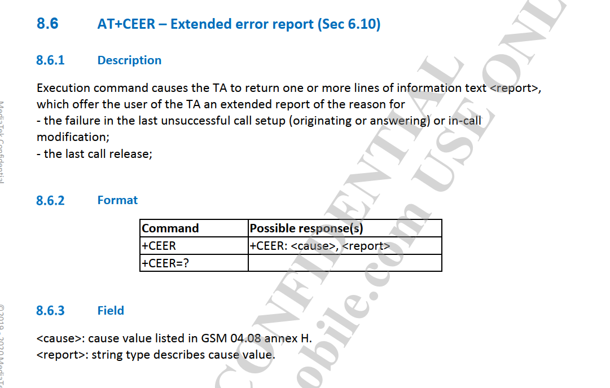

概述
PAX A3700需要删除短信和电话功能，mtk提供patch进行合并，有一些注意事项。
MTK SOP
[Instruction]
0. Make sure the patch version is fit to your codebase (e.g: If the patch named: MOLY.LR12A.R3.MP.Vx_xxxx_Py.tar, please make sure your SW version is Vx and already applied accumulated patches from P1 to Py-1)
1. Extract the patch compressed file. (*.tar.gz)
2. If the patch file contain [mcu] or [common] foloder.
2.1 Delete the following files in your original mcu codebase (important!)
(i) Under mtk_rel\xxx\xxx\dhl\database folder, file name contains MDDB*************.EDB (ex: MDDB_MT6763_S00_MOLY_LR12A_R2_MP_V1.EDB & _MDDB_MT6763_S00_MOLY_LR12A_R2_MP_V1.EDB.check)
(ii)Under dsp_rel\xxx\xxx\final_bin, file name starts with DbgInfo_DSP (ex: DbgInfo_DSP_MT6771_MOLY_LR12A_R2_MP_V1_2019_05_16_14_54 )
2.2 Merge the [mcu]/[common] folder to your original codebase.
2.3 cd to mcu folder and rebuild the modem image. (./m [Project makefile name] new)
2.4 Follow the instruction on ReleaseNote tab:[Build_Configure_Modem] to copy modem image to ALPS.
3. If the patch file contain [apps] folder.
3.1 Merge the [apps] folder to your original codebase.
3.2 cd the apps folder and rebuild the MD APPS library & binary. (./build.sh clean,build,pack all [modem chip generation config file])
3.3 Follow the instruction on ReleaseNote tab:[Build_Configure_Modem] to copy MD APPS library & binary to ALPS.
4. Update modem image & MD APPS library & binary in alps build system (alps build command: make update-modem)
Please check SW Release Note (ReleaseNote_for_MTxxxx_alps-mp-xx.Vyy.xlsx) tab:[Build_Configure_Modem] for detail modem build Instruction.
来去电状态
一、来电
CALL_STATE_IDLE
CALL_STATE_RINGING:号码
①接听+挂断
CALL_STATE_RINGING:NULL
CALL_STATE_OFFHOOK
CALL_STATE_OFFHOOK
CALL_STATE_IDLE
②不接听直接挂断
CALL_STATE_RINGING:NULL
CALL_STATE_IDLE
二、去电
CALL OUT:号码
CALL_STATE_OFFHOOK
CALL_STATE_OFFHOOK
①对方接听以后，本地没有收到广播
②挂断
CALL_STATE_OFFHOOK
CALL_STATE_IDLE
小结
来电情况：
1. 响铃：CALL_STATE_IDLE + CALL_STATE_RINGING
2. 接听：CALL_STATE_RINGING + CALL_STATE_OFFHOOK
3. 挂断：(CALL_STATE_RINGING 或 CALL_STATE_OFFHOOK) + CALL_STATE_IDLE
去电情况：
1. 电话是否被接听：无法监听，因为没有广播变化
2. 挂断：CALL_STATE_OFFHOOK + CALL_STATE_IDLE
原文链接：https://blog.csdn.net/Lambert_A/article/details/51087780
patch注意事项
LWTG_6177M_R3_6762 project工程选项
首先注意到modem mcu编译命令
./m "TK_MD_BASIC(LWTG_6177M_R3_6762).mak" new，选的project是LWTG_6177M_R3_6762，所以配置文件是如下路径，另外需要注意的电如下描述：
paxmodem/mcu/mtk_rel/TK_MD_BASIC/LWTG_6177M_R3_6762
├── BASIC
│ └── mcd
│ ├── mcd_l3_inc_gprs_struct.h
│ ├── mcd_l3_inc_struct.h
│ └── mcd_ps2sat_peer.h
├── dhl
│ ├── database
│ │ ├── mcddll.dll //数据库文件，需要删除并替换
│ │ ├── MDDB_MT6765_S00_MOLY_LR12A_R3_MP_V153_7_P7.EDB //数据库文件，需要删除并替换
│ │ └── _MDDB_MT6765_S00_MOLY_LR12A_R3_MP_V153_7_P7.EDB.check //数据库文件，需要删除并替换
│ ├── include
│ │ ├── amif_trace.h
│ │ ├── data_path_detail.h
├── dsp_rel
│ └── MT6765
│ └── DEFAULT_ASIC_6177M
│ └── final_bin
│ ├── DbgInfo_DSP_MT6765_MOLY_LR12A_R3_MP_V153_7_P7_2022_06_15_15_27 //数据库文件，需要删除并替换
│ ├── dsp.bin//数据库文件，需要删除并替换
│ └── xml
│ ├── DSP_AllOff.dbf
│ ├── DSP_Default.dbf
│ ├── DSP_MetaDefault.dbf
│ └── DSP_PLS_PS_ONLY.dbf
└── lib //库文件，每个patch必须替换
├── libasinterfaces.a
├── libas_semaphore_utility.a
├── libatp.a
├── libatp_protected.a
以上得知，数据库文件，需要删除并替换，mtk SOP中也强调Delete the following files in your original mcu codebase，先删除数据库文件，然后在执行拷贝编译。
去除电话功能验证
打电话时立马挂断，符合要求，radio log如下：
m_timing_advance: 2147483647, cdma_dbm: 2147483647, cdma_ecio: 2147483647, evd
o_dbm: 2147483647, evdo_ecio: 2147483647, evdo_snr: 2147483647, lte_signal_strength: 99, lte_rsrp: 86, lte_rsrq: 6, lte_rssnr: 112, lte_cqi: 0, lte_timing_advance: 0, tdscdma_signal_strength: 99, tds
cdma_bit_error_rate: 99, tdscdma_rscp: 255, wcdma_signal_strength: 99, wcdma_bit_error_rate: 99, wcdma_scdma_rscp: 255, wcdma_ecno: 255, ssRsrp: 2147483647, ssRsrq: 2147483647, ssSinr: 2147483647, cs
iRsrp: 2147483647, csiRsrq: 2147483647, csiSinr: 2147483647
07-13 12:20:45.822 3757 3757 D MTKSST : [GsmSST0] new:{level:4, raw:SignalStrength:{mCdma=CellSignalStrengthCdma: cdmaDbm=2147483647 cdmaEcio=2147483647 evdoDbm=2147483647 evdoEcio=2147483647 evdo
Snr=2147483647 level=0,mGsm=CellSignalStrengthGsm: rssi=2147483647 ber=2147483647 mTa=2147483647 mLevel=0,mWcdma=CellSignalStrengthWcdma: ss=2147483647 ber=2147483647 rscp=2147483647 ecno=2147483647
level=0,mTdscdma=CellSignalStrengthTdscdma: rssi=2147483647 ber=2147483647 rscp=2147483647 level=0,mLte=CellSignalStrengthLte: rssi=2147483647 rsrp=-86 rsrq=-6 rssnr=11 cqi=0 ta=0 level=4 parametersU
seForLevel=1,mNr=CellSignalStrengthNr:{ csiRsrp = 2147483647 csiRsrq = 2147483647 csiSinr = 2147483647 ssRsrp = 2147483647 ssRsrq = 2147483647 ssSinr = 2147483647 level = 0 parametersUseForLevel = 1
},primary=CellSignalStrengthLte}, phoneId=0, mMtkLevel=-1, mMtkRsrpOnly=true, mMtkLteRsrpThreshold=null, mMtkLteRssnrThreshold=null}, old:{level:4, raw:SignalStrength:{mCdma=CellSignalStrengthCdma: c
dmaDbm=2147483647 cdmaEcio=2147483647 evdoDbm=2147483647 evdoEcio=2147483647 evdoSnr=2147483647 level=0,mGsm=CellSignalStrengthGsm: rssi=2147483647 ber=2147483647 mTa=2147483647 mLevel=0,mWcdma=CellS
ignalStrengthWcdma: ss=2147483647 ber=2147483647 rscp=2147483647 ecno=2147483647 level=0,mTdscdma=CellSignalStrengthTdscdma: rssi=2147483647 ber=2147483647 rscp=2147483647 level=0,mLte=CellSignalStre
ngthLte: rssi=2147483647 rsrp=-83 rsrq=-7 rssnr=12 cqi=0 ta=0 level=4 parametersUseForLevel=1,mNr=CellSignalStrengthNr:{ csiRsrp = 2147483647 csiRsrq = 2147483647 csiSinr = 2147483647 ssRsrp = 214748
3647 ssRsrq = 2147483647 ssSinr = 2147483647 level = 0 parametersUseForLevel = 1 },primary=CellSignalStrengthLte}, phoneId=0, mMtkLevel=-1, mMtkRsrpOnly=true, mMtkLteRsrpThreshold=null, mMtkLteRssnrT
hreshold=null}
07-13 12:20:47.851 1114 1187 I RilClient: initialize: commandFd is 61
07-13 12:20:47.852 1114 1187 I RilClient: start listen on fd: 27, socket name: rild-oem
07-13 12:20:47.854 1114 1137 I RmcOemHandler: requestQueryThermal Enter: -1
07-13 12:20:47.854 1114 1137 I AT : [0] AT> AT+ETHERMAL (RIL_CMD_READER_1 tid:517789080768)
07-13 12:20:47.860 1114 1136 I AT : [0] AT< +ETHERMAL: 3, 36, -7, -28408, 32767, 0 (RIL_CMD_READER_1, tid:517790121152)
07-13 12:20:47.860 1114 1136 I AT : [0] AT< OK (RIL_CMD_READER_1, tid:517790121152)
07-13 12:20:47.860 1114 1137 I RmcOemHandler: requestQueryThermal success
07-13 12:20:47.861 1114 1125 D RtcRilClientController: client 1001 handle requestComplete
07-13 12:20:48.321 1114 1131 I AT : [0] AT< +ECSQ: 30,60,1,1,1,-20,-324,4096,61,3 (RIL_URC_READER, tid:517794966720)
07-13 12:20:48.325 1114 1132 D RmcNwHdlr: [0] handleSignalStrength, gsm_signal_strength: 99, gsm_bit_error_rate: 99, gsm_timing_advance: 2147483647, cdma_dbm: 2147483647, cdma_ecio: 2147483647, evd
o_dbm: 2147483647, evdo_ecio: 2147483647, evdo_snr: 2147483647, lte_signal_strength: 99, lte_rsrp: 81, lte_rsrq: 5, lte_rssnr: 152, lte_cqi: 0, lte_timing_advance: 0, tdscdma_signal_strength: 99, tds
cdma_bit_error_rate: 99, tdscdma_rscp: 255, wcdma_signal_strength: 99, wcdma_bit_error_rate: 99, wcdma_scdma_rscp: 255, wcdma_ecno: 255, ssRsrp: 2147483647, ssRsrq: 2147483647, ssSinr: 2147483647, cs
iRsrp: 2147483647, csiRsrq: 2147483647, csiSinr: 2147483647
07-13 12:20:48.340 3757 3757 D MTKSST : [GsmSST0] new:{level:4, raw:SignalStrength:{mCdma=CellSignalStrengthCdma: cdmaDbm=2147483647 cdmaEcio=2147483647 evdoDbm=2147483647 evdoEcio=2147483647 evdo
Snr=2147483647 level=0,mGsm=CellSignalStrengthGsm: rssi=2147483647 ber=2147483647 mTa=2147483647 mLevel=0,mWcdma=CellSignalStrengthWcdma: ss=2147483647 ber=2147483647 rscp=2147483647 ecno=2147483647
level=0,mTdscdma=CellSignalStrengthTdscdma: rssi=2147483647 ber=2147483647 rscp=2147483647 level=0,mLte=CellSignalStrengthLte: rssi=2147483647 rsrp=-81 rsrq=-5 rssnr=15 cqi=0 ta=0 level=4 parametersU
seForLevel=1,mNr=CellSignalStrengthNr:{ csiRsrp = 2147483647 csiRsrq = 2147483647 csiSinr = 2147483647 ssRsrp = 2147483647 ssRsrq = 2147483647 ssSinr = 2147483647 level = 0 parametersUseForLevel = 1
},primary=CellSignalStrengthLte}, phoneId=0, mMtkLevel=-1, mMtkRsrpOnly=true, mMtkLteRsrpThreshold=null, mMtkLteRssnrThreshold=null}, old:{level:4, raw:SignalStrength:{mCdma=CellSignalStrengthCdma: c
dmaDbm=2147483647 cdmaEcio=2147483647 evdoDbm=2147483647 evdoEcio=2147483647 evdoSnr=2147483647 level=0,mGsm=CellSignalStrengthGsm: rssi=2147483647 ber=2147483647 mTa=2147483647 mLevel=0,mWcdma=CellS
ignalStrengthWcdma: ss=2147483647 ber=2147483647 rscp=2147483647 ecno=2147483647 level=0,mTdscdma=CellSignalStrengthTdscdma: rssi=2147483647 ber=2147483647 rscp=2147483647 level=0,mLte=CellSignalStre
ngthLte: rssi=2147483647 rsrp=-86 rsrq=-6 rssnr=11 cqi=0 ta=0 level=4 parametersUseForLevel=1,mNr=CellSignalStrengthNr:{ csiRsrp = 2147483647 csiRsrq = 2147483647 csiSinr = 2147483647 ssRsrp = 214748
3647 ssRsrq = 2147483647 ssSinr = 2147483647 level = 0 parametersUseForLevel = 1 },primary=CellSignalStrengthLte}, phoneId=0, mMtkLevel=-1, mMtkRsrpOnly=true, mMtkLteRsrpThreshold=null, mMtkLteRssnrT
hreshold=null}
07-13 12:20:48.381 3757 3798 D SubscriptionController: [getSubId]- numSubIds == 0, return null slotIndex=1
07-13 12:20:48.388 3757 3798 E PhoneSubInfoController: getVoiceMailNumber phone is null for Subscription:-1
07-13 12:20:48.391 3757 3798 E PhoneSubInfoController: getLine1Number phone is null for Subscription:-1
07-13 12:20:48.407 3757 5094 E PhoneSubInfoController: getVoiceMailNumber phone is null for Subscription:-1
07-13 12:20:48.419 3757 3798 E PhoneSubInfoController: getLine1Number phone is null for Subscription:-1
07-13 12:20:48.420 1214 3396 D MtkTelephonyRegistryEx: idMatchEx: rSubId=2147483647, subId=1, dSubId=1, rPhoneId=-1, phoneId=0
07-13 12:20:48.421 1214 3396 D MtkTelephonyRegistryEx: idMatchEx: rSubId=1, subId=1, dSubId=1, rPhoneId=0, phoneId=0
07-13 12:20:48.480 3757 3798 D SubscriptionController: [getPhoneId] asked for default subId=1
07-13 12:20:48.537 1114 1125 D RtcImsConfigController: [0] onHandleRequest - RFX_MSG_REQUEST_IMS_CONFIG_GET_RESOURCE_CAP
07-13 12:20:48.538 1114 1125 D RtcImsConfigController: [0] getImsResourceCapability, feature_id:2
07-13 12:20:48.549 3757 3798 D SubscriptionController: [getSubId]- numSubIds == 0, return null slotIndex=1
07-13 12:20:48.626 3757 3757 D SubscriptionController: [getSubId]- numSubIds == 0, return null slotIndex=1
07-13 12:20:48.628 3757 3757 D MtkLteDataOnlyController: checkPermission subId=1, slotId=0 cdmaSlotId=-2
07-13 12:20:48.637 3757 3757 D MtkGsmCdmaPhone: isCdmaLess: false
07-13 12:20:48.656 3757 3757 D SubscriptionController: getSubscriptionProperty Query value = -1
07-13 12:20:48.666 3757 3757 D MtkGsmCdmaPhone: isImsUseEnabled() VolteEnableByUser: true, WfcEnableByUser: true, isNonTtyOrTtyOnVolteEnabled: true
07-13 12:20:48.666 3757 3757 D TDC : getModemCount: 3
07-13 12:20:48.667 3757 3757 D TDC : getModem: 0
07-13 12:20:48.667 3757 3757 D TDC : getModemCount: 3
07-13 12:20:48.667 3757 3757 D TDC : getModem: 0
07-13 12:20:48.667 3757 3757 D MtkGsmCdmaPhone: keep AOSP
07-13 12:20:48.667 3757 3757 D MtkGsmCdmaPhone: shouldProcessSelfActivation() state: 0
07-13 12:20:48.667 3757 3757 D MtkGsmCdmaPhone: pcoState() state: 0
07-13 12:20:48.680 3757 3757 D SubscriptionController: getSubscriptionProperty Query value = -1
07-13 12:20:48.680 3757 3757 D MtkGsmCdmaPhone: isCdmaLess: false
07-13 12:20:48.680 3757 3757 D MtkGsmCdmaPhone: isCdmaLess: false
07-13 12:20:48.681 3757 3757 D MtkGsmMmiCode: newFromDialString, dialstring = MTAwODY=
07-13 12:20:48.681 3757 3757 D MtkGsmMmiCode: Not belong to MMI format.
07-13 12:20:48.681 3757 3757 D GsmCdmaCallTracker: [0] update phone state, old=IDLE new=IDLE
07-13 12:20:48.691 3757 3757 D GsmCdmaCallTracker: [0] convertNumberIfNecessary convertMaps is null
07-13 12:20:48.692 3757 3757 D GsmCdmaConnection: [GsmCdmaConn] acquireWakeLock
07-13 12:20:48.699 3757 3757 D GsmCdmaCallTracker: dialGsm - emergency dialer: false
07-13 12:20:48.703 3757 3757 D RILJ : [0559]> SET_MUTE enableMute = false [PHONE0]
07-13 12:20:48.704 1114 1139 D RmcCCReqHandler: [0] onHandleRequest: RFX_MSG_REQUEST_SET_MUTE
07-13 12:20:48.704 1114 1139 I AT : [0] AT> AT+CMUT=0 (RIL_CMD_READER_2 tid:517787000000)
07-13 12:20:48.705 3757 3757 D RILJ : [0560]> DIAL [PHONE0]
07-13 12:20:48.706 1114 1125 I RtcEccNumberController: [getEmergencyCallRouting] 10* is not a ECC
07-13 12:20:48.706 1114 1125 I RtcEccNumberController: [getEmergencyCallRouting] 10* is not a ECC
07-13 12:20:48.707 3757 3757 D RILJ : [UNSL]< MTK: UNSOL_CALL_ADDITIONAL_INFO [PHONE0]
07-13 12:20:48.707 3757 3757 D GsmCdmaCallTracker: [0] update phone state, old=IDLE new=OFFHOOK
07-13 12:20:48.709 1114 1138 I AT : [0] AT< ERROR (RIL_CMD_READER_2, tid:517788040384)
07-13 12:20:48.710 1114 1139 D RmcCCReqHandler: [0] onHandleRequest: RFX_MSG_REQUEST_DIAL
07-13 12:20:48.710 1114 1139 D RmcCCReqHandler: [0] AT> ATD1**86
07-13 12:20:48.710 1114 1139 I AT : [0] AT> AT+EVADSMOD=5,0 (RIL_CMD_READER_2 tid:517787000000)
07-13 12:20:48.711 3757 4181 D RILJ : [0559]< SET_MUTE error 38 [PHONE0]
07-13 12:20:48.711 3757 4181 D RilRequest: [0559]< SET_MUTE error: com.android.internal.telephony.CommandException: INTERNAL_ERR ret=
07-13 12:20:48.712 1114 1138 I AT : [0] AT< OK (RIL_CMD_READER_2, tid:517788040384)
07-13 12:20:48.712 1114 1139 I AT : [0] AT> ATD=*** (RIL_CMD_READER_2, tid:517787000000)
07-13 12:20:48.716 1114 1138 I AT : [0] AT< OK (RIL_CMD_READER_2, tid:517788040384)
07-13 12:20:48.716 1114 1131 I AT : [0] AT< +ECPI=*** (RIL_URC_READER, tid:517794966720)
07-13 12:20:48.717 1114 1132 D RmcCCBaseHandler: [0] AT< +ECPI: 1, 130, 0, 0, 0, 0, 1**86, 129, **
07-13 12:20:48.717 1114 1125 D RtcImsEvent: [0] onHandleUrc: RFX_MSG_UNSOL_CALL_INFO_INDICATION
07-13 12:20:48.717 1114 1125 D RtcRedialController: [0] handleCallInfoUpdate slot:0, callId:1, msgType:130, disc:0, redial:0
07-13 12:20:48.717 1114 1125 D RtcCC : [0] updateRQ() : RQ = 1
07-13 12:20:48.717 3757 4181 D RILJ : [0560]< DIAL [PHONE0]
07-13 12:20:48.718 1114 1125 D RtcRatSwCtrl: [0] onApVoiceCallCountChanged, slotId:0, key:41 oldMode:0, mode:1
07-13 12:20:48.718 1114 1125 D RtcRatSwCtrl: [1] onApVoiceCallCountChanged, slotId:0, key:41 oldMode:0, mode:1
07-13 12:20:48.720 1114 1131 I AT : [0] AT< NO CARRIER (RIL_URC_READER, tid:517794966720)
07-13 12:20:48.721 1114 1125 D RtcImsEvent: [0] onHandleUrc: RFX_MSG_UNSOL_NO_CARRIER
07-13 12:20:48.721 1114 1125 I RilOpProxy: [getOpUnsolResponseInfo] dlopen failed in libmtk-rilop.so: (null)
07-13 12:20:48.721 1114 1125 E RILC : unsupported unsolicited response code 0
07-13 12:20:48.722 1114 1131 I AT : [0] AT< +ECPI=*** (RIL_URC_READER, tid:517794966720)
07-13 12:20:48.722 1114 1132 D RmcCCBaseHandler: [0] AT< +ECPI: 1, 133, 0, 0, 0, 0, 1**86, 129, **, 63
07-13 12:20:48.723 1114 1139 D RmcCCReqHandler: [0] onHandleEvent: 52007
07-13 12:20:48.723 1114 1132 D RmcSSUrc: [0] handleECPI133Received, tmpSvcNotify.index = 0, callId = 1
07-13 12:20:48.723 1114 1125 D RtcImsEvent: [0] onHandleUrc: RFX_MSG_UNSOL_CALL_INFO_INDICATION
07-13 12:20:48.723 1114 1125 D RtcRedialController: [0] handleCallInfoUpdate slot:0, callId:1, msgType:133, disc:63, redial:0
07-13 12:20:48.723 3757 4181 D RILJ : Unsol response received; Sending ack to ril.cpp [PHONE0]
07-13 12:20:48.723 3757 4181 D RILJ : [UNSL]< UNSOL_RESPONSE_CALL_STATE_CHANGED [PHONE0]
07-13 12:20:48.724 1114 1125 D RtcCC : [0] updateRQ() : RQ = 0
07-13 12:20:48.724 1114 1125 D RtcRatSwCtrl: [0] onApVoiceCallCountChanged, slotId:0, key:41 oldMode:1, mode:0
07-13 12:20:48.724 1114 1125 D RtcRatSwCtrl: [1] onApVoiceCallCountChanged, slotId:0, key:41 oldMode:1, mode:0
07-13 12:20:48.726 3757 4181 D RILJ : Unsol response received; Sending ack to ril.cpp [PHONE0]
07-13 12:20:48.727 3757 4181 D RILJ : [UNSL]< UNSOL_RESPONSE_CALL_STATE_CHANGED [PHONE0]
07-13 12:20:48.769 3757 3757 D MtkGsmCdmaPhone: isDuringVoLteCall: false
07-13 12:20:48.770 3757 3757 D MtkTelephonyManagerEx: isDataAvailableForGwsdDualSim
07-13 12:20:48.771 3757 3757 D DcHelper: isDsdalikeAvailable return false.
07-13 12:20:48.772 3757 3757 D MtkPhoneSwitcher: ForegroundCall:DIALING, RingingCall:IDLE, BackgroundCall: IDLE, getPhoneId(): 0, isVolteCalling: false, isDsdalikeAvailable: false
07-13 12:20:48.772 3757 3757 D PhoneSwitcher: isPhoneInVoiceCallChanged from phoneId -1 to phoneId 0
07-13 12:20:48.773 3757 3757 D SubscriptionController: [getSubId]- numSubIds == 0, return null slotIndex=1
07-13 12:20:48.774 3757 3757 D MtkPhoneSwitcher: set mIsInCall to true
07-13 12:20:48.775 3757 3757 D SmartDataSwitch: registerReEvaluateEvent()
07-13 12:20:48.778 3757 3757 D SmartDataSwitchOpExt: checkIsSwitchAvailable() settings is off, not passed
07-13 12:20:48.782 3757 3757 D DcHelper: MT_CALL_RQ, phoneId= 0, mtCallRq = 1, mGwsdDualSimStatus = true
07-13 12:20:48.782 3757 3757 D DcHelper: Voice Call Started, phoneId = 0
07-13 12:20:48.782 3757 3757 D DcHelper: onVoiceCallStarted: mPhone[ 0]
07-13 12:20:48.783 3757 3757 D DcHelper: shouldAutoAttachForCall=false, phoneId:0, getVoiceNetworkType=13
07-13 12:20:48.783 3757 3757 D DcHelper: isDataSupportConcurrent: (voice/data on the same phone) isConcurrent = true, phoneId = 0, callingPhoneId = 0, inPsEcc = false, inSrvcc = false, csCallState
= OFFHOOK
07-13 12:20:48.783 3757 3757 D DcHelper: onVoiceCallStarted: mPhone[ 1]
07-13 12:20:48.783 3757 3757 D MtkTelephonyManagerEx: isDataAvailableForGwsdDualSim
07-13 12:20:48.784 3757 3757 D DcHelper: isDsdalikeAvailable return false.
07-13 12:20:48.789 3757 3757 D RILJ : [0563]> GET_CURRENT_CALLS [PHONE0]
07-13 12:20:48.790 3757 3757 D MtkGsmCdmaPhone: isDuringVoLteCall: false
07-13 12:20:48.790 1114 1139 D RmcCCReqHandler: [0] onHandleRequest: RFX_MSG_REQUEST_GET_CURRENT_CALLS
07-13 12:20:48.791 1114 1139 I AT : [0] AT> AT+CLCC=*** (RIL_CMD_READER_2, tid:517787000000)
07-13 12:20:48.791 3757 3757 D MtkTelephonyManagerEx: isDataAvailableForGwsdDualSim
07-13 12:20:48.792 3757 3757 D DcHelper: isDsdalikeAvailable return false.
07-13 12:20:48.792 3757 3757 D MtkPhoneSwitcher: ForegroundCall:DIALING, RingingCall:IDLE, BackgroundCall: IDLE, getPhoneId(): 0, isVolteCalling: false, isDsdalikeAvailable: false
07-13 12:20:48.794 1114 1138 I AT : [0] AT< OK (RIL_CMD_READER_2, tid:517788040384)
07-13 12:20:48.794 3757 3757 D RILJ : [0564]> GET_CURRENT_CALLS [PHONE0]
07-13 12:20:48.796 1114 1139 D RmcCCReqHandler: [0] onHandleRequest: RFX_MSG_REQUEST_GET_CURRENT_CALLS
07-13 12:20:48.796 1114 1139 I AT : [0] AT> AT+CLCC=*** (RIL_CMD_READER_2, tid:517787000000)
07-13 12:20:48.798 3757 4181 D RILJ : [0563]< GET_CURRENT_CALLS {} [PHONE0]
07-13 12:20:48.799 1114 1138 I AT : [0] AT< OK (RIL_CMD_READER_2, tid:517788040384)
07-13 12:20:48.799 3757 3757 D RILJ : [0565]> GET_CURRENT_CALLS [PHONE0]
07-13 12:20:48.800 3757 3757 D GsmCdmaCallTracker: Event EVENT_POLL_CALLS_RESULT Received
07-13 12:20:48.800 1114 1139 D RmcCCReqHandler: [0] onHandleRequest: RFX_MSG_REQUEST_GET_CURRENT_CALLS
07-13 12:20:48.801 3757 4181 D RILJ : [0564]< GET_CURRENT_CALLS {} [PHONE0]
07-13 12:20:48.801 1114 1139 I AT : [0] AT> AT+CLCC=*** (RIL_CMD_READER_2, tid:517787000000)
07-13 12:20:48.801 3757 3757 D GsmCdmaCallTracker: Event EVENT_POLL_CALLS_RESULT Received
07-13 12:20:48.803 1114 1138 I AT : [0] AT< OK (RIL_CMD_READER_2, tid:517788040384)
07-13 12:20:48.805 3757 4181 D RILJ : [0565]< GET_CURRENT_CALLS {} [PHONE0]
07-13 12:20:48.808 3757 3757 D GsmCdmaCallTracker: Event EVENT_POLL_CALLS_RESULT Received
07-13 12:20:48.808 3757 3757 D GsmCdmaCallTracker: Pending MO dropped before poll fg state:DIALING
07-13 12:20:48.812 3757 3757 D RILJ : [0566]> LAST_CALL_FAIL_CAUSE [PHONE0]
07-13 12:20:48.813 3757 3757 D GsmCdmaCallTracker: [0] update phone state, old=OFFHOOK new=OFFHOOK
07-13 12:20:48.813 1114 1125 D RtcImsEvent: [0] needProcessFakeDisconnect(), mFakeDisconnectedCallProcessingCount = 0
07-13 12:20:48.814 1114 1139 D RmcCCReqHandler: [0] onHandleRequest: RFX_MSG_REQUEST_LAST_CALL_FAIL_CAUSE
07-13 12:20:48.814 1114 1139 I AT : [0] AT> AT+CEER (RIL_CMD_READER_2 tid:517787000000)
07-13 12:20:48.817 1114 1138 I AT : [0] AT< +CEER: 63,CM_SER_UNAVAILABLE (RIL_CMD_READER_2, tid:517788040384)
07-13 12:20:48.817 1114 1138 I AT : [0] AT< OK (RIL_CMD_READER_2, tid:517788040384)
07-13 12:20:48.817 1114 1139 D RmcCCReqHandler: [0] MD fail cause_code = 63, vendor_cause = CM_SER_UNAVAILABLE
07-13 12:20:48.817 1114 1139 D RmcCCReqHandler: [0] RIL fail cause_code = 63, vendor_cause = CM_SER_UNAVAILABLE
07-13 12:20:48.818 3757 4181 D RILJ : [0566]< LAST_CALL_FAIL_CAUSE com.android.internal.telephony.LastCallFailCause@8439301 causeCode: 63 vendorCause: CM_SER_UNAVAILABLE [PHONE0]
07-13 12:20:48.819 3757 3757 D GsmCdmaConnection: onDisconnect: cause=36
07-13 12:20:48.819 6131 6131 I WfcLocationHandler: onCallStateChanged state=2
07-13 12:20:48.820 3757 3757 I Connection: notifyDisconnect: callId=TC@7_1, reason=36
07-13 12:20:48.821 3757 3757 D GsmCdmaConnection: [GsmCdmaConn] releaseWakeLock
07-13 12:20:48.822 3757 3757 D GsmCdmaCallTracker: [0] update phone state, old=OFFHOOK new=IDLE
07-13 12:20:48.827 3757 5054 D SubscriptionController: [getSubId]- numSubIds == 0, return null slotIndex=1
07-13 12:20:48.832 3757 3757 D VoiceCallSessionStats: onRilCallListChanged: skip adding disconnected connection
07-13 12:20:48.838 6131 6131 I WfcLocationHandler: isEccInProgress: false
07-13 12:20:48.849 3757 5054 D SubscriptionController: [getSubId]- numSubIds == 0, return null slotIndex=1
07-13 12:20:48.859 3757 3757 D DcHelper: mSrvccState = NONE
07-13 12:20:48.859 3757 3757 D DcHelper: Voice Call Ended, phoneId = 0
07-13 12:20:48.860 3757 3757 D DcHelper: onVoiceCallEnded: mPhone[ 0]
07-13 12:20:48.862 1214 3396 D MtkTelephonyRegistryEx: idMatchEx: rSubId=2147483647, subId=1, dSubId=1, rPhoneId=-1, phoneId=0
07-13 12:20:48.863 1214 3396 D MtkTelephonyRegistryEx: idMatchEx: rSubId=1, subId=1, dSubId=1, rPhoneId=0, phoneId=0
07-13 12:20:48.867 3757 3757 D DcHelper: onVoiceCallEnded: mPhone[ 1]
07-13 12:20:48.868 3757 3757 D DcHelper: onPhoneStateChanged: phone is OFFHOOK
07-13 12:20:48.869 3757 3757 I chatty : uid=1001(radio) com.android.phone identical 1 line
07-13 12:20:48.870 3757 3757 D DcHelper: onPhoneStateChanged: phone is OFFHOOK
07-13 12:20:48.871 3757 3757 D MtkGsmCdmaPhone: isDuringVoLteCall: false
07-13 12:20:48.871 3757 3757 D MtkTelephonyManagerEx: isDataAvailableForGwsdDualSim
07-13 12:20:48.872 3757 3757 D DcHelper: isDsdalikeAvailable return false.
07-13 12:20:48.872 3757 3757 D MtkPhoneSwitcher: ForegroundCall:DISCONNECTED, RingingCall:IDLE, BackgroundCall: IDLE, getPhoneId(): 0, isVolteCalling: false, isDsdalikeAvailable: false
07-13 12:20:48.873 3757 3757 D MtkGsmCdmaPhone: isDuringVoLteCall: false
07-13 12:20:48.873 3757 3757 D MtkTelephonyManagerEx: isDataAvailableForGwsdDualSim
07-13 12:20:48.874 3757 3757 D DcHelper: isDsdalikeAvailable return false.
07-13 12:20:48.874 3757 3757 D MtkPhoneSwitcher: ForegroundCall:IDLE, RingingCall:IDLE, BackgroundCall: IDLE, getPhoneId(): 0, isVolteCalling: false, isDsdalikeAvailable: false
07-13 12:20:48.875 3757 3757 D MtkGsmCdmaPhone: isDuringVoLteCall: false
07-13 12:20:48.875 3757 3757 D MtkTelephonyManagerEx: isDataAvailableForGwsdDualSim
07-13 12:20:48.875 3757 3757 D DcHelper: isDsdalikeAvailable return false.
07-13 12:20:48.876 3757 3757 D MtkPhoneSwitcher: ForegroundCall:IDLE, RingingCall:IDLE, BackgroundCall: IDLE, getPhoneId(): 1, isVolteCalling: false, isDsdalikeAvailable: false
07-13 12:20:48.877 3757 3757 D MtkGsmCdmaPhone: isDuringVoLteCall: false
07-13 12:20:48.877 3757 3757 D MtkTelephonyManagerEx: isDataAvailableForGwsdDualSim
07-13 12:20:48.878 3757 3757 D DcHelper: isDsdalikeAvailable return false.
07-13 12:20:48.878 3757 3757 D MtkPhoneSwitcher: ForegroundCall:IDLE, RingingCall:IDLE, BackgroundCall: IDLE, getPhoneId(): 1, isVolteCalling: false, isDsdalikeAvailable: false
07-13 12:20:48.878 3757 3757 D PhoneSwitcher: isPhoneInVoiceCallChanged from phoneId 0 to phoneId -1
07-13 12:20:48.878 3757 3757 D SubscriptionController: [getSubId]- numSubIds == 0, return null slotIndex=1
07-13 12:20:48.879 3757 3757 D MtkPhoneSwitcher: set mIsInCall to false
07-13 12:20:48.879 3757 3757 D SmartDataSwitch: unregisterReEvaluateEvent()
07-13 12:20:48.881 6131 6131 I WfcLocationHandler: onCallStateChanged state=0
07-13 12:20:48.885 3757 3757 D DcHelper: onPhoneStateChanged: phone is IDLE
07-13 12:20:48.885 3757 3757 I chatty : uid=1001(radio) com.android.phone identical 1 line
07-13 12:20:48.888 3757 3757 D DcHelper: onPhoneStateChanged: phone is IDLE
07-13 12:20:48.891 3757 5094 D SubscriptionController: [getPhoneId] asked for default subId=1
07-13 12:20:48.907 3757 5094 D SubscriptionController: [getSubId]- numSubIds == 0, return null slotIndex=1
07-13 12:20:48.942 3757 5094 D SubscriptionController: [getSubId]- numSubIds == 0, return null slotIndex=1
07-13 12:20:48.957 3757 5054 D SubscriptionController: [getSubId]- numSubIds == 0, return null slotIndex=1
07-13 12:20:48.967 3757 5054 D SubscriptionController: [getSubId]- numSubIds == 0, return null slotIndex=1
07-13 12:20:50.429 1214 4967 D MtkTelephonyRegistryEx: idMatchEx: rSubId=2147483647, subId=1, dSubId=1, rPhoneId=-1, phoneId=0
07-13 12:20:50.429 1214 4967 D MtkTelephonyRegistryEx: idMatchEx: rSubId=1, subId=1, dSubId=1, rPhoneId=0, phoneId=0
07-13 12:20:50.503 1114 1133 I AT : [1] AT< +ECSQ: 255,255,1,1,1,1,1,4096,32767,-1 (RIL_URC2_READER, tid:517792885952)
07-13 12:20:50.742 1114 1133 I chatty : uid=1001(radio) RfxReader_12 identical 1 line
07-13 12:20:50.863 1114 1133 I AT : [1] AT< +ECSQ: 255,255,1,1,1,1,1,4096,32767,-1 (RIL_URC2_READER, tid:517792885952)
07-13 12:20:50.909 1114 1131 I AT : [0] AT< +ECSQ: 29,56,1,1,1,-21,-339,4096,45,3 (RIL_URC_READER, tid:517794966720)
07-13 12:20:50.913 1114 1132 D RmcNwHdlr: [0] handleSignalStrength, gsm_signal_strength: 99, gsm_bit_error_rate: 99, gsm_timing_advance: 2147483647, cdma_dbm: 2147483647, cdma_ecio: 2147483647, evd
o_dbm: 2147483647, evdo_ecio: 2147483647, evdo_snr: 2147483647, lte_signal_strength: 99, lte_rsrp: 85, lte_rsrq: 6, lte_rssnr: 112, lte_cqi: 0, lte_timing_advance: 0, tdscdma_signal_strength: 99, tds
cdma_bit_error_rate: 99, tdscdma_rscp: 255, wcdma_signal_strength: 99, wcdma_bit_error_rate: 99, wcdma_scdma_rscp: 255, wcdma_ecno: 255, ssRsrp: 2147483647, ssRsrq: 2147483647, ssSinr: 2147483647, cs
iRsrp: 2147483647, csiRsrq: 2147483647, csiSinr: 2147483647
07-13 12:20:50.921 3757 3757 D MTKSST : [GsmSST0] new:{level:4, raw:SignalStrength:{mCdma=CellSignalStrengthCdma: cdmaDbm=2147483647 cdmaEcio=2147483647 evdoDbm=2147483647 evdoEcio=2147483647 evdo
Snr=2147483647 level=0,mGsm=CellSignalStrengthGsm: rssi=2147483647 ber=2147483647 mTa=2147483647 mLevel=0,mWcdma=CellSignalStrengthWcdma: ss=2147483647 ber=2147483647 rscp=2147483647 ecno=2147483647
level=0,mTdscdma=CellSignalStrengthTdscdma: rssi=2147483647 ber=2147483647 rscp=2147483647 level=0,mLte=CellSignalStrengthLte: rssi=2147483647 rsrp=-85 rsrq=-6 rssnr=11 cqi=0 ta=0 level=4 parametersU
seForLevel=1,mNr=CellSignalStrengthNr:{ csiRsrp = 2147483647 csiRsrq = 2147483647 csiSinr = 2147483647 ssRsrp = 2147483647 ssRsrq = 2147483647 ssSinr = 2147483647 level = 0 parametersUseForLevel = 1
},primary=CellSignalStrengthLte}, phoneId=0, mMtkLevel=-1, mMtkRsrpOnly=true, mMtkLteRsrpThreshold=null, mMtkLteRssnrThreshold=null}, old:{level:4, raw:SignalStrength:{mCdma=CellSignalStrengthCdma: c
dmaDbm=2147483647 cdmaEcio=2147483647 evdoDbm=2147483647 evdoEcio=2147483647 evdoSnr=2147483647 level=0,mGsm=CellSignalStrengthGsm: rssi=2147483647 ber=2147483647 mTa=2147483647 mLevel=0,mWcdma=CellS
ignalStrengthWcdma: ss=2147483647 ber=2147483647 rscp=2147483647 ecno=2147483647 level=0,mTdscdma=CellSignalStrengthTdscdma: rssi=2147483647 ber=2147483647 rscp=2147483647 level=0,mLte=CellSignalStre
ngthLte: rssi=2147483647 rsrp=-81 rsrq=-5 rssnr=15 cqi=0 ta=0 level=4 parametersUseForLevel=1,mNr=CellSignalStrengthNr:{ csiRsrp = 2147483647 csiRsrq = 2147483647 csiSinr = 2147483647 ssRsrp = 214748
3647 ssRsrq = 2147483647 ssSinr = 2147483647 level = 0 parametersUseForLevel = 1 },primary=CellSignalStrengthLte}, phoneId=0, mMtkLevel=-1, mMtkRsrpOnly=true, mMtkLteRsrpThreshold=null, mMtkLteRssnrT
hreshold=null}
07-13 12:20:50.989 1114 1133 I AT : [1] AT< +ECSQ: 255,255,1,1,1,1,1,4096,32767,-1 (RIL_URC2_READER, tid:517792885952)
07-13 12:20:52.044 1114 1133 I chatty : uid=1001(radio) RfxReader_12 identical 5 lines
07-13 12:20:52.203 1114 1133 I AT : [1] AT< +ECSQ: 255,255,1,1,1,1,1,4096,32767,-1 (RIL_URC2_READER, tid:517792885952)
07-13 12:20:52.435 1214 3398 D MtkTelephonyRegistryEx: idMatchEx: rSubId=2147483647, subId=1, dSubId=1, rPhoneId=-1, phoneId=0
07-13 12:20:52.436 1214 3398 D MtkTelephonyRegistryEx: idMatchEx: rSubId=1, subId=1, dSubId=1, rPhoneId=0, phoneId=0
07-13 12:20:52.441 1114 1133 I AT : [1] AT< +ECSQ: 255,255,1,1,1,1,1,4096,32767,-1 (RIL_URC2_READER, tid:517792885952)
^C
130|PAYTABLETM8:/ #
简化分析
拨打电话：
07-13 12:20:48.710 1114 1139 D RmcCCReqHandler: [0] AT> ATD1**86
查询当前call状态为挂断(OFFHOOK)：
07-13 12:20:48.799 3757 3757 D RILJ : [0565]> GET_CURRENT_CALLS [PHONE0]
07-13 12:20:48.800 3757 3757 D GsmCdmaCallTracker: Event EVENT_POLL_CALLS_RESULT Received
07-13 12:20:48.800 1114 1139 D RmcCCReqHandler: [0] onHandleRequest: RFX_MSG_REQUEST_GET_CURRENT_CALLS
07-13 12:20:48.801 3757 4181 D RILJ : [0564]< GET_CURRENT_CALLS {} [PHONE0]
07-13 12:20:48.801 1114 1139 I AT : [0] AT> AT+CLCC=*** (RIL_CMD_READER_2, tid:517787000000)
07-13 12:20:48.801 3757 3757 D GsmCdmaCallTracker: Event EVENT_POLL_CALLS_RESULT Received
07-13 12:20:48.803 1114 1138 I AT : [0] AT< OK (RIL_CMD_READER_2, tid:517788040384)
07-13 12:20:48.805 3757 4181 D RILJ : [0565]< GET_CURRENT_CALLS {} [PHONE0]
07-13 12:20:48.808 3757 3757 D GsmCdmaCallTracker: Event EVENT_POLL_CALLS_RESULT Received
07-13 12:20:48.808 3757 3757 D GsmCdmaCallTracker: Pending MO dropped before poll fg state:DIALING
07-13 12:20:48.812 3757 3757 D RILJ : [0566]> LAST_CALL_FAIL_CAUSE [PHONE0]
07-13 12:20:48.813 3757 3757 D GsmCdmaCallTracker: [0] update phone state, old=OFFHOOK new=OFFHOOK
查询电话上次呼叫建立失败原因为CM_SER_UNAVAILABLE：
07-13 12:20:48.813 1114 1125 D RtcImsEvent: [0] needProcessFakeDisconnect(), mFakeDisconnectedCallProcessingCount = 0
07-13 12:20:48.814 1114 1139 D RmcCCReqHandler: [0] onHandleRequest: RFX_MSG_REQUEST_LAST_CALL_FAIL_CAUSE
07-13 12:20:48.814 1114 1139 I AT : [0] AT> AT+CEER (RIL_CMD_READER_2 tid:517787000000)
07-13 12:20:48.817 1114 1138 I AT : [0] AT< +CEER: 63,CM_SER_UNAVAILABLE (RIL_CMD_READER_2, tid:517788040384)
07-13 12:20:48.817 1114 1138 I AT : [0] AT< OK (RIL_CMD_READER_2, tid:517788040384)
07-13 12:20:48.817 1114 1139 D RmcCCReqHandler: [0] MD fail cause_code = 63, vendor_cause = CM_SER_UNAVAILABLE
07-13 12:20:48.817 1114 1139 D RmcCCReqHandler: [0] RIL fail cause_code = 63, vendor_cause = CM_SER_UNAVAILABLE
07-13 12:20:48.818 3757 4181 D RILJ : [0566]< LAST_CALL_FAIL_CAUSE com.android.internal.telephony.LastCallFailCause@8439301 causeCode: 63 vendorCause: CM_SER_UNAVAILABLE [PHONE0]
AT指令描述：

去除短信功能验证
使用AT指令发送短信：text格式
发送：AT+CMGF=1回车发送
返回：ok
发送：AT+CMGS=”14779934366”回车发送
经验证，A3700和A800项目modem侧实际是支持短信功能的，但是mtk说只需去掉短信应用即可。
CELL=*** (RIL_CMD_READER_1, tid:517790121152)
07-13 12:34:00.529 1114 1136 I AT : [0] AT< OK (RIL_CMD_READER_1, tid:517790121152)
07-13 12:34:00.529 1114 1137 D RmcNwHdlr: [0] act=7,cid=***1E02,mcc=460,mnc=1,mnc_len=2,lacTac=**3E,pscPci=*BD,sig1=54,sig2=29,rsrp=-348,rsrq=-22,ta=2,rssnr=2147483647,cqi=2147483647,bsic=0,arfcn=1
650
07-13 12:34:00.529 1114 1137 D RmcNwHdlr: [0] act=7,cid=***FFFF,mcc=2147483647,mnc=0,mnc_len=2,lacTac=**FF,pscPci=*6,sig1=45,sig2=14,rsrp=-384,rsrq=-52,ta=2147483647,rssnr=2147483647,cqi=2147483647
,bsic=0,arfcn=1650
07-13 12:34:00.538 3757 3757 D LocaleTracker-0: processCellInfo: cell info=[CellInfoLte:{mRegistered=YES mTimeStamp=1180006278838ns mCellConnectionStatus=1 CellIdentityLte:{ mCi=111746562 mPci=445
mTac=9534 mEarfcn=1650 mBands=[] mBandwidth=2147483647 mMcc=460 mMnc=01 mAlphaLong=CHN-UNICOM mAlphaShort=UNICOM mAdditionalPlmns={} mCsgInfo=null} CellSignalStrengthLte: rssi=-85 rsrp=-87 rsrq=-5 rs
snr=2147483647 cqi=2147483647 ta=2 level=4 parametersUseForLevel=1 android.telephony.CellConfigLte :{ isEndcAvailable = false }}, CellInfoLte:{mRegistered=NO mTimeStamp=1180006278838ns mCellConnectio
nStatus=0 CellIdentityLte:{ mCi=268435455 mPci=150 mTac=65535 mEarfcn=1650 mBands=[] mBandwidth=2147483647 mMcc=null mMnc=null mAlphaLong= mAlphaShort= mAdditionalPlmns={} mCsgInfo=null} CellSignalSt
rengthLte: rssi=-89 rsrp=-96 rsrq=-13 rssnr=2147483647 cqi=2147483647 ta=2147483647 level=4 parametersUseForLevel=1 android.telephony.CellConfigLte :{ isEndcAvailable = false }}]
07-13 12:34:00.539 3757 3757 D LocaleTracker-0: updateLocale: countryIso = cn, countryIsoDebugInfo = OperatorNumeric(46001): MccTable.countryCodeForMcc("460")
07-13 12:34:00.540 3757 3757 D LocaleTracker-0: updateLocale: timeZoneCountryIso = cn, timeZoneCountryIsoDebugInfo = OperatorNumeric: MccTable.geoCountryCodeForMccMnc(MccMnc{mcc='460', mnc='01'})
07-13 12:34:00.540 3757 3757 D NewNitzStateMachineImpl: handleCountryDetected: countryIsoCode=cn, mLatestNitzSignal=null
07-13 12:34:00.542 3757 4181 D RILJ : [0823]< RIL_REQUEST_GET_CELL_INFO_LIST [CellInfoLte:{mRegistered=YES mTimeStamp=1180006278838ns mCellConnectionStatus=1 CellIdentityLte:{ mCi=111746562 mPci
=445 mTac=9534 mEarfcn=1650 mBands=[] mBandwidth=2147483647 mMcc=460 mMnc=01 mAlphaLong=CHN-UNICOM mAlphaShort=UNICOM mAdditionalPlmns={} mCsgInfo=null} CellSignalStrengthLte: rssi=-85 rsrp=-87 rsrq=
-5 rssnr=2147483647 cqi=2147483647 ta=2 level=4 parametersUseForLevel=1 android.telephony.CellConfigLte :{ isEndcAvailable = false }}, CellInfoLte:{mRegistered=NO mTimeStamp=1180006278838ns mCellConn
ectionStatus=0 CellIdentityLte:{ mCi=268435455 mPci=150 mTac=65535 mEarfcn=1650 mBands=[] mBandwidth=2147483647 mMcc=null mMnc=null mAlphaLong= mAlphaShort= mAdditionalPlmns={} mCsgInfo=null} CellSig
nalStrengthLte: rssi=-89 rsrp=-96 rsrq=-13 rssnr=2147483647 cqi=2147483647 ta=2147483647 level=4 parametersUseForLevel=1 android.telephony.CellConfigLte :{ isEndcAvailable = false }}] [PHONE0]
07-13 12:34:07.852 11117 11117 D ATCID : 886:readline(): Read data from USB:0:4
07-13 12:34:07.853 11117 11117 D ATCID : 916:readline(): Wait for read data from USB :4
07-13 12:34:07.853 11117 11117 D ATCID : 920:readline(): the readCount is 22 with AT+CMGS="14779934366"
07-13 12:34:07.853 11117 11117 D ATCID : :65
07-13 12:34:07.853 11117 11117 D ATCID : 922:readline(): VCOM mode, sleep 0.01s
07-13 12:34:07.863 11117 11117 D ATCID : 959:readline(): atci_conn_mode = [1], [41]
07-13 12:34:07.863 11117 11117 D ATCID : 984:readline(): state 0 with 0:65
07-13 12:34:07.864 11117 11117 D ATCID : 1011:readline(): isMsgCmdInput, text=AT+CMGS="14779934366"
07-13 12:34:07.864 11117 11117 D ATCID : 129:sendDataToRild(): Enter
07-13 12:34:07.865 11117 11117 D ATCID : 142:sendDataToRild(): send data over
07-13 12:34:07.866 11117 11117 D ATCID : 778:readline(): Enter
07-13 12:34:07.866 1114 1188 I RilAtciClient: slotId 0
07-13 12:34:07.866 11117 11117 D ATCID : 803:readline(): invalide fd set [2].
07-13 12:34:07.866 1114 1188 I RilAtciClient: buffer AT+CMGS="14779934366"
07-13 12:34:07.866 1114 1188 I RilAtciClient: , length 22
07-13 12:34:07.866 11117 11117 D ATCID : 835:readline(): Wait for select data from USB
07-13 12:34:07.866 1114 1125 D RtcRedialController: [0] message: 54010, RFX_MSG_REQUEST_OEM_HOOK_ATCI_INTERNAL
07-13 12:34:07.867 1114 1125 D RtcRedialController: [0] [onHandleAtciRequest] simNo: 0
07-13 12:34:07.867 1114 1125 D RtcRedialController: [0] Inject AT command AT+CMGS="14779934366"
07-13 12:34:07.867 1114 1125 D RtcRedialController: (length:22)
07-13 12:34:07.867 1114 1125 D RtcAtciController: [0] [onHandleAtciRequest] message: 54010 RFX_MSG_REQUEST_OEM_HOOK_ATCI_INTERNAL
07-13 12:34:07.867 1114 1145 D RmcAtciRequestHandler: [0] [onHandleRequest] message: 54010 RFX_MSG_REQUEST_OEM_HOOK_ATCI_INTERNAL
07-13 12:34:07.868 1114 1145 D RmcAtciRequestHandler: [0] [handleOemHookAtciInternalRequest] enter
07-13 12:34:07.868 1114 1145 I AT : [0] AT> AT+CMGS=*** (RIL_ATCI_READER, tid:517780757696)
07-13 12:34:07.871 1114 1144 I AT : [0] AT< > (RIL_ATCI_READER, tid:517781798080)
07-13 12:34:07.872 1114 1125 D RtcAtciController: [0] [onHandleAtciResponse] message: 54010 RFX_MSG_REQUEST_OEM_HOOK_ATCI_INTERNAL
07-13 12:34:07.872 1114 1125 D RtcRilClientController: client 1006 handle requestComplete
07-13 12:34:07.873 1114 1125 I RilAtciClient: commandFd is valid, strResult is
07-13 12:34:07.873 1114 1125 I RilAtciClient: >
07-13 12:34:07.874 11117 11117 D ATCID : 375:readDataFromTarget(): Enter
07-13 12:34:07.874 11117 11117 I ATCID : 376:readDataFromTarget(): Read data from target:1 with fd:12
07-13 12:34:07.874 11117 11117 I ATCID : 403:readDataFromTarget(): data receive from 1 is
07-13 12:34:07.874 11117 11117 I ATCID : >
07-13 12:34:07.875 11117 11117 I ATCID : 404:readDataFromTarget(): data receive data length is 6
07-13 12:34:07.875 11117 11117 D ATCID : 193:writeDataToSerialByDataType(): Enter with dataType:1
07-13 12:34:07.875 11117 11117 D ATCID : 194:writeDataToSerialByDataType(): Enter with data:
07-13 12:34:07.875 11117 11117 D ATCID : >
07-13 12:34:07.875 11117 11117 D ATCID : 195:writeDataToSerialByDataType(): Enter with length:6
07-13 12:34:07.876 11117 11117 D ATCID : 214:writeDataToSerialByDataType(): Not audio
07-13 12:34:07.876 11117 11117 D ATCID : 218:writeDataToSerialByDataType(): remove head and tail
07-13 12:34:07.876 11117 11117 D ATCID : 260:writeDataToSerialByDataType(): length=6
07-13 12:34:07.876 11117 11117 D ATCID : 803:readline(): invalide fd set [2].
07-13 12:34:07.876 11117 11117 D ATCID : 835:readline(): Wait for select data from USB
07-13 12:34:09.256 1114 1187 I RilClient: initialize: commandFd is 61
07-13 12:34:09.257 1114 1187 I RilClient: start listen on fd: 27, socket name: rild-oem
07-13 12:34:09.258 1114 1137 I RmcOemHandler: requestQueryThermal Enter: -1
07-13 12:34:09.259 1114 1137 I AT : [0] AT> AT+ETHERMAL (RIL_CMD_READER_1 tid:517789080768)
07-13 12:34:09.264 1114 1136 I AT : [0] AT< +ETHERMAL: 3, 35, -14, -28408, 32767, 0 (RIL_CMD_READER_1, tid:517790121152)
07-13 12:34:09.265 1114 1136 I AT : [0] AT< OK (RIL_CMD_READER_1, tid:517790121152)
07-13 12:34:09.265 1114 1137 I RmcOemHandler: requestQueryThermal success
07-13 12:34:09.266 1114 1125 D RtcRilClientController: client 1001 handle requestComplete
07-13 12:34:11.456 11117 11117 D ATCID : 886:readline(): Read data from USB:0:4
07-13 12:34:11.456 11117 11117 D ATCID : 916:readline(): Wait for read data from USB :4
07-13 12:34:11.457 11117 11117 D ATCID : 920:readline(): the readCount is 11 with hello wugn
07-13 12:34:11.457 11117 11117 D ATCID : :104
07-13 12:34:11.457 11117 11117 D ATCID : 922:readline(): VCOM mode, sleep 0.01s
07-13 12:34:11.467 11117 11117 D ATCID : 959:readline(): atci_conn_mode = [1], [68]
07-13 12:34:11.467 11117 11117 D ATCID : 984:readline(): state 0 with 0:104
07-13 12:34:11.467 11117 11117 D ATCID : 1011:readline(): isMsgCmdInput, text=hello wugn
07-13 12:34:11.467 11117 11117 D ATCID : 129:sendDataToRild(): Enter
07-13 12:34:11.467 11117 11117 D ATCID : 142:sendDataToRild(): send data over
07-13 12:34:11.468 11117 11117 D ATCID : 778:readline(): Enter
07-13 12:34:11.468 11117 11117 D ATCID : 803:readline(): invalide fd set [2].
07-13 12:34:11.468 11117 11117 D ATCID : 835:readline(): Wait for select data from USB
07-13 12:34:11.468 1114 1188 I RilAtciClient: slotId 0
07-13 12:34:11.468 1114 1188 I RilAtciClient: buffer hello wugn
07-13 12:34:11.468 1114 1188 I RilAtciClient: , length 11
07-13 12:34:11.469 1114 1125 D RtcRedialController: [0] message: 54010, RFX_MSG_REQUEST_OEM_HOOK_ATCI_INTERNAL
07-13 12:34:11.470 1114 1125 D RtcRedialController: [0] [onHandleAtciRequest] simNo: 0
07-13 12:34:11.470 1114 1125 D RtcRedialController: [0] Inject AT command hello wugn
07-13 12:34:11.470 1114 1125 D RtcRedialController: (length:11)
07-13 12:34:11.470 1114 1125 D RtcAtciController: [0] [onHandleAtciRequest] message: 54010 RFX_MSG_REQUEST_OEM_HOOK_ATCI_INTERNAL
07-13 12:34:11.471 1114 1145 D RmcAtciRequestHandler: [0] [onHandleRequest] message: 54010 RFX_MSG_REQUEST_OEM_HOOK_ATCI_INTERNAL
07-13 12:34:11.471 1114 1145 D RmcAtciRequestHandler: [0] [handleOemHookAtciInternalRequest] enter
07-13 12:34:11.472 1114 1145 I AT : [0] AT> hello wugn
07-13 12:34:11.472 1114 1145 I AT : (RIL_ATCI_READER tid:517780757696)
07-13 12:34:11.476 1114 1144 I AT : [0] AT< > (RIL_ATCI_READER, tid:517781798080)
07-13 12:34:11.477 1114 1125 D RtcAtciController: [0] [onHandleAtciResponse] message: 54010 RFX_MSG_REQUEST_OEM_HOOK_ATCI_INTERNAL
07-13 12:34:11.478 1114 1125 D RtcRilClientController: client 1006 handle requestComplete
07-13 12:34:11.478 1114 1125 I RilAtciClient: commandFd is valid, strResult is
07-13 12:34:11.478 1114 1125 I RilAtciClient: >
07-13 12:34:11.478 11117 11117 D ATCID : 375:readDataFromTarget(): Enter
07-13 12:34:11.478 11117 11117 I ATCID : 376:readDataFromTarget(): Read data from target:1 with fd:12
07-13 12:34:11.479 11117 11117 I ATCID : 403:readDataFromTarget(): data receive from 1 is
07-13 12:34:11.479 11117 11117 I ATCID : >
07-13 12:34:11.479 11117 11117 I ATCID : 404:readDataFromTarget(): data receive data length is 6
07-13 12:34:11.479 11117 11117 D ATCID : 193:writeDataToSerialByDataType(): Enter with dataType:1
07-13 12:34:11.479 11117 11117 D ATCID : 194:writeDataToSerialByDataType(): Enter with data:
07-13 12:34:11.479 11117 11117 D ATCID : >
07-13 12:34:11.479 11117 11117 D ATCID : 195:writeDataToSerialByDataType(): Enter with length:6
07-13 12:34:11.479 11117 11117 D ATCID : 214:writeDataToSerialByDataType(): Not audio
07-13 12:34:11.479 11117 11117 D ATCID : 218:writeDataToSerialByDataType(): remove head and tail
07-13 12:34:11.479 11117 11117 D ATCID : 260:writeDataToSerialByDataType(): length=6
07-13 12:34:11.480 11117 11117 D ATCID : 803:readline(): invalide fd set [2].
07-13 12:34:11.480 11117 11117 D ATCID : 835:readline(): Wait for select data from USB
07-13 12:34:16.172 3757 3757 D RILJ : [0824]> RIL_REQUEST_GET_CELL_INFO_LIST [PHONE1]
07-13 12:34:16.177 1114 1164 I AT : [1] AT> AT+ECELL (RIL_CMD2_READER_1 tid:517149240512)
07-13 12:34:16.182 1114 1163 I AT : [1] AT< +ECELL=*** (RIL_CMD2_READER_1, tid:517167058112)
07-13 12:34:16.183 1114 1163 I AT : [1] AT< OK (RIL_CMD2_READER_1, tid:517167058112)
07-13 12:34:16.183 1114 1164 D RmcNwReqHdlr: [1] No cell info listed, num=0
07-13 12:34:16.183 1114 1164 E RmcNwHdlr: [1] getCdmaPlmn, return because error.
07-13 12:34:16.183 1114 1164 E RmcNwReqHdlr: [1] requestGetCellInfoList must never return error when radio is on
07-13 12:34:16.184 1114 1125 E RILC : getCellInfoListResponse: Invalid response
07-13 12:34:16.185 3757 4181 D RILJ : [0824]< RIL_REQUEST_GET_CELL_INFO_LIST error 63 [PHONE1]
07-13 12:34:16.186 3757 4181 D RilRequest: [0824]< RIL_REQUEST_GET_CELL_INFO_LIST error: com.android.internal.telephony.CommandException: NO_NETWORK_FOUND ret=[]
07-13 12:34:16.187 3757 3757 D MTKSST : [GsmSST1] EVENT_GET_CELL_INFO_LIST: error ret null, e=com.android.internal.telephony.CommandException: NO_NETWORK_FOUND
07-13 12:34:16.188 3757 3757 D LocaleTracker-1: Can't get cell info. Try again in 600 secs.
07-13 12:34:19.271 1114 1187 I RilClient: initialize: commandFd is 105
07-13 12:34:19.272 1114 1187 I RilClient: start listen on fd: 27, socket name: rild-oem
07-13 12:34:19.275 1114 1137 I RmcOemHandler: requestQueryThermal Enter: -1
07-13 12:34:19.275 1114 1137 I AT : [0] AT> AT+ETHERMAL (RIL_CMD_READER_1 tid:517789080768)
07-13 12:34:19.281 1114 1136 I AT : [0] AT< +ETHERMAL: 3, 35, -16, -28408, 32767, 25518 (RIL_CMD_READER_1, tid:517790121152)
07-13 12:34:19.282 1114 1136 I AT : [0] AT< OK (RIL_CMD_READER_1, tid:517790121152)
07-13 12:34:19.282 1114 1137 I RmcOemHandler: requestQueryThermal success
07-13 12:34:19.284 1114 1125 D RtcRilClientController: client 1001 handle requestComplete
07-13 12:34:20.525 3757 3757 D RILJ : [0825]> RIL_REQUEST_GET_CELL_INFO_LIST [PHONE0]
07-13 12:34:20.529 1114 1137 I AT : [0] AT> AT+ECELL (RIL_CMD_READER_1 tid:517789080768)
07-13 12:34:20.535 1114 1136 I AT : [0] AT< +ECELL=*** (RIL_CMD_READER_1, tid:517790121152)
07-13 12:34:20.536 1114 1136 I AT : [0] AT< OK (RIL_CMD_READER_1, tid:517790121152)
07-13 12:34:20.536 1114 1137 D RmcNwHdlr: [0] act=7,cid=***1E02,mcc=460,mnc=1,mnc_len=2,lacTac=**3E,pscPci=*BD,sig1=53,sig2=24,rsrp=-352,rsrq=-32,ta=2,rssnr=2147483647,cqi=2147483647,bsic=0,arfcn=1
650
07-13 12:34:20.536 1114 1137 D RmcNwHdlr: [0] act=7,cid=***FFFF,mcc=2147483647,mnc=0,mnc_len=2,lacTac=**FF,pscPci=*6,sig1=45,sig2=8,rsrp=-384,rsrq=-64,ta=2147483647,rssnr=2147483647,cqi=2147483647,
bsic=0,arfcn=1650
07-13 12:34:20.540 3757 4181 D RILJ : [0825]< RIL_REQUEST_GET_CELL_INFO_LIST [CellInfoLte:{mRegistered=YES mTimeStamp=1200013186839ns mCellConnectionStatus=1 CellIdentityLte:{ mCi=111746562 mPci
=445 mTac=9534 mEarfcn=1650 mBands=[] mBandwidth=2147483647 mMcc=460 mMnc=01 mAlphaLong=CHN-UNICOM mAlphaShort=UNICOM mAdditionalPlmns={} mCsgInfo=null} CellSignalStrengthLte: rssi=-85 rsrp=-88 rsrq=
-8 rssnr=2147483647 cqi=2147483647 ta=2 level=4 parametersUseForLevel=1 android.telephony.CellConfigLte :{ isEndcAvailable = false }}, CellInfoLte:{mRegistered=NO mTimeStamp=1200013186839ns mCellConn
ectionStatus=0 CellIdentityLte:{ mCi=268435455 mPci=150 mTac=65535 mEarfcn=1650 mBands=[] mBandwidth=2147483647 mMcc=null mMnc=null mAlphaLong= mAlphaShort= mAdditionalPlmns={} mCsgInfo=null} CellSig
nalStrengthLte: rssi=-89 rsrp=-96 rsrq=-16 rssnr=2147483647 cqi=2147483647 ta=2147483647 level=4 parametersUseForLevel=1 android.telephony.CellConfigLte :{ isEndcAvailable = false }}] [PHONE0]
07-13 12:34:20.548 3757 3757 D LocaleTracker-0: processCellInfo: cell info=[CellInfoLte:{mRegistered=YES mTimeStamp=1200013186839ns mCellConnectionStatus=1 CellIdentityLte:{ mCi=111746562 mPci=445
mTac=9534 mEarfcn=1650 mBands=[] mBandwidth=2147483647 mMcc=460 mMnc=01 mAlphaLong=CHN-UNICOM mAlphaShort=UNICOM mAdditionalPlmns={} mCsgInfo=null} CellSignalStrengthLte: rssi=-85 rsrp=-88 rsrq=-8 rs
snr=2147483647 cqi=2147483647 ta=2 level=4 parametersUseForLevel=1 android.telephony.CellConfigLte :{ isEndcAvailable = false }}, CellInfoLte:{mRegistered=NO mTimeStamp=1200013186839ns mCellConnectio
nStatus=0 CellIdentityLte:{ mCi=268435455 mPci=150 mTac=65535 mEarfcn=1650 mBands=[] mBandwidth=2147483647 mMcc=null mMnc=null mAlphaLong= mAlphaShort= mAdditionalPlmns={} mCsgInfo=null} CellSignalSt
rengthLte: rssi=-89 rsrp=-96 rsrq=-16 rssnr=2147483647 cqi=2147483647 ta=2147483647 level=4 parametersUseForLevel=1 android.telephony.CellConfigLte :{ isEndcAvailable = false }}]
07-13 12:34:20.549 3757 3757 D LocaleTracker-0: updateLocale: countryIso = cn, countryIsoDebugInfo = OperatorNumeric(46001): MccTable.countryCodeForMcc("460")
07-13 12:34:20.549 3757 3757 D LocaleTracker-0: updateLocale: timeZoneCountryIso = cn, timeZoneCountryIsoDebugInfo = OperatorNumeric: MccTable.geoCountryCodeForMccMnc(MccMnc{mcc='460', mnc='01'})
07-13 12:34:20.549 3757 3757 D NewNitzStateMachineImpl: handleCountryDetected: countryIsoCode=cn, mLatestNitzSignal=null
^C
130|PAYTABLETM8:/ #